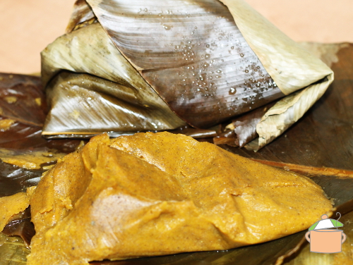

Plantain Moi Moi

A dish to try for the adventerous... or not
Plantain Moi Moi (Ukpo Ogede) is one of the Nigerian plantain recipes prepared with overripe platains.
Do not let the look of this meal deceive you! It is very delicious. Yes, it has this unique taste that your taste buds will love.
Ingredients
- 2 pcs of overripe plantain (Even if the skin is now black, as long as the inside is not decomposed)
- 100g plantain flour
- 1-2 cooking spoons palm oil
- 1 teaspoon ground crayfish
- 1 onion
- Pepper and Salt (to taste)
- 1 Knorr cube
- Cool water
Containers:
- Uma leaves (Thaumatococcus Daniellii)
- Aluminium foil bags
- Bowls
Instructions:
- Blend the overripe plantain pieces, plantain flour batter, onions, crayfish, pepper and stock cube with just enough water to allow the blades of the blender move.
- Pour the smooth blend into a sizeable bowl.
- Add salt and palm oil. Mix thoroughly till well combined.
- Set a small quantity of water in a pot to boil. When the water boils, place a base for the Plantain Moi Moi wraps into the pot. This can be scrap pieces of aluminium foil, a stainless steel stand or leaf stalks from the uma leaves.
- Scoop the mix into folded uma leaves, just as you would with beans Moi Moi.
- Gently place the wraps in the pot of boiling water and cook for 20-25 minutes. Add water along the way if necessary.
- Leave to cool down completely and set before serving.